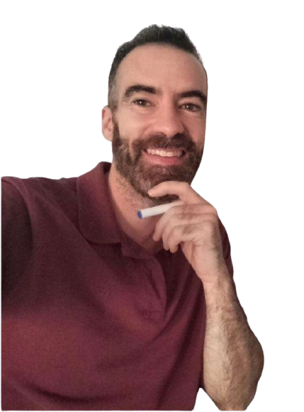

Primer contacto con tecnología
Inicio en Ingeniería Técnica de Informática
Primer acercamiento al mundo del desarrollo y la lógica
 Fernando González
Fernando González
Más de 6 años desarrollando y optimizando proyectos web, combinando frontend, SEO y visión de negocio.
Trabajo con Angular, JavaScript y tecnologías web modernas para crear interfaces funcionales, rápidas y centradas en usuario.
const frontend = { name: 'Fernando González', skills:[ 'HTML', 'Angular', 'Astro', 'TailwindCSS', 'CSS', 'JavaScript' ] clientView: true, problemSolver: true, profesional: function () { return ( this.clientView && this.problemSolver && this.skills.length >= 5 ); }; };
Explora mi progreso como desarrollador en cada etapa del camino.
Inicio en Ingeniería Técnica de Informática
Primer acercamiento al mundo del desarrollo y la lógica
Etapa en Empresariales, enfocada a entender fundamentos de gestión y empresa.
Cambio de enfoque hacia la parte económica y organizativa.
Residencia en República Dominicana durante varios años.
Desarrollo de adaptación a entornos distintos, autonomía y visión práctica del mundo real.
Formación en Marketing e Investigación de Mercados.
Especialización en comportamiento de usuario, negocio y entorno digital.
Primer contacto profesional con entorno digital, participando en gestión de clientes, campañas y mejora de procesos.
Coordinación en entorno inmobiliario, trabajando con clientes, procesos internos y herramientas digitales.
Optimización operativa y apoyo en marketing.
Creación de sitios web orientados a negocio, combinando desarrollo frontend con SEO, rendimiento y conversión.
Trabajo en proyectos reales enfocados a captación y experiencia de usuario.
Participación en proyectos de CRO, implementando mejoras técnicas y test A/B en aplicaciones web.
Colaboración con equipos multidisciplinares.
Colaboración técnica en plataforma web activa, resolviendo incidencias y desarrollando nuevas funcionalidades.
Trabajo con control de versiones y dinámicas reales de desarrollo.
Administrador de lotería
La Torre de oroEl desarrollo de la web de La Torre de Oro cumplió con lo que necesitábamos para digitalizar el servicio. Se trabajó una plataforma funcional, clara y orientada a la conversión, facilitando la gestión de la información y la experiencia del usuario. Durante el proceso hubo comunicación fluida y capacidad de adaptación a cambios sobre la marcha, algo clave en este tipo de proyectos.
Eliseo
Analista & Programador en Accenture EspañaHe colaborado con Fernando en varios proyectos donde yo me encargaba del backend. Su parte frontend y de integración ha sido consistente, resolviendo bien la conexión entre lógica y presentación. Tiene buena capacidad para entender estructuras técnicas aunque no sean su área principal, y eso facilita mucho el trabajo en equipo. En proyectos colaborativos, cumple y no bloquea el flujo, que ya es más de lo que parece en este sector.

David Martínez
PsicólogoHe trabajado con Fernando en la creación de mi página web profesional en WordPress y el resultado ha sido mucho más sólido de lo que esperaba al principio. No solo se encargó del desarrollo, también estuvo disponible en todo momento para ajustes, mejoras y soporte cuando lo necesité, incluso después de la entrega. La web transmite justo lo que quería a nivel profesional y es fácil de gestionar. Se nota que entiende tanto la parte técnica como la intención del negocio detrás.
Duban Black
Harry Potter HeadFernando se incorporó al proyecto HarryPotterHead como colaborador técnico en la parte web del foro. Su trabajo ha estado centrado en mantenimiento, mejoras funcionales y resolución de incidencias. Es un perfil práctico, que prioriza que las cosas funcionen y se entreguen, más que complicarse con teorías. A nivel de equipo, se adapta bien a las prioridades del proyecto y responde cuando hay que sacar trabajo adelante con presión o cambios rápidos.